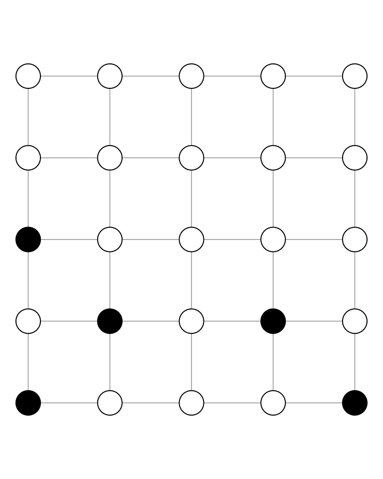
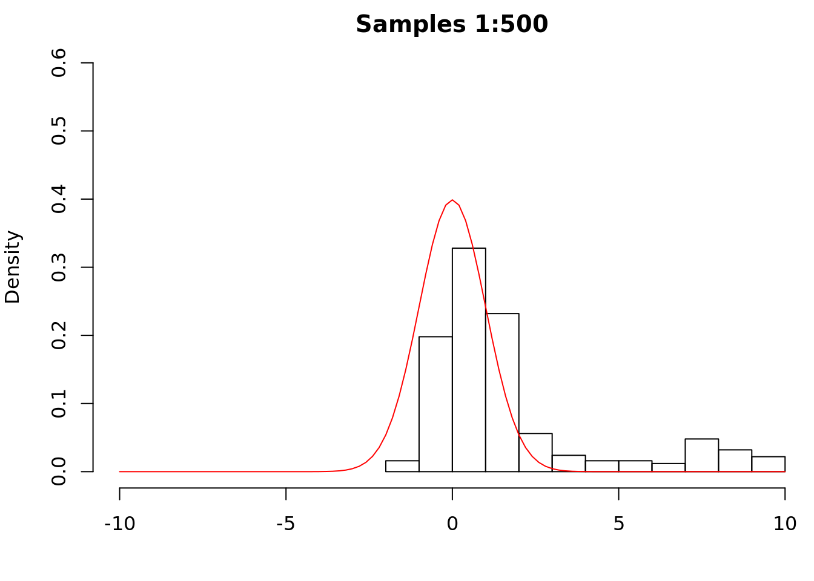
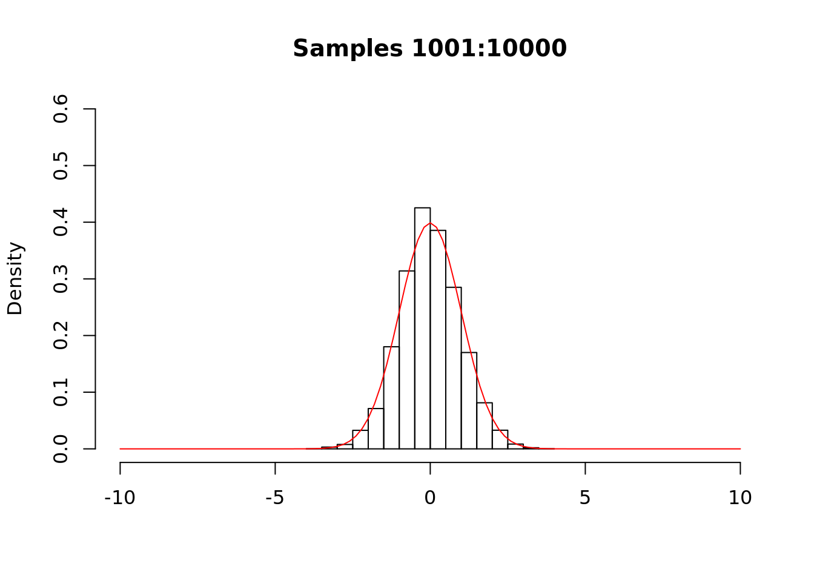
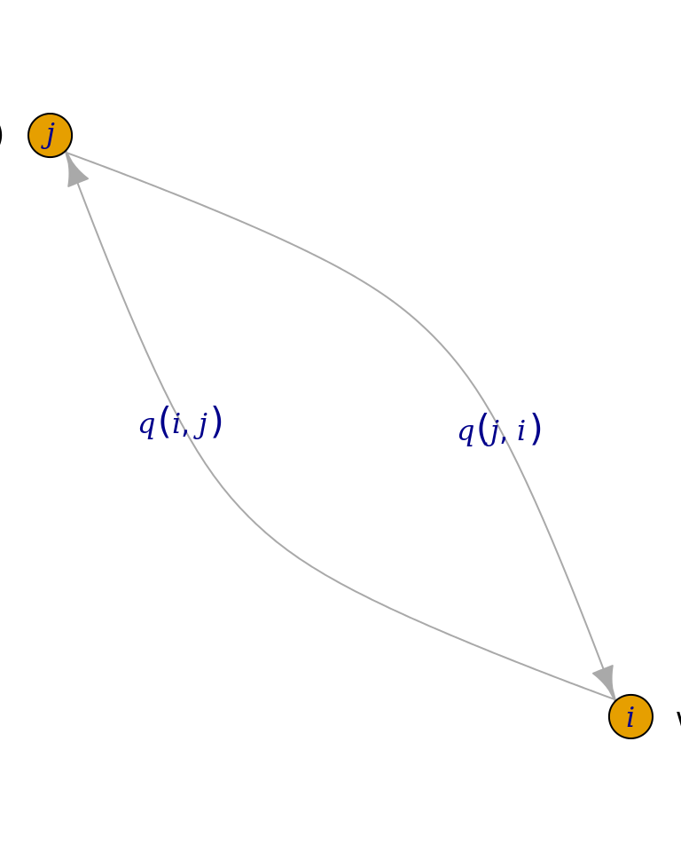

Chapter 10 Markov Chain Monte Carlo
10.1 Motivation
We now introduce a general sampling technique that is often used to sample from intractable distributions. Previous techniques we have seen have required information that we may not always have, such as the inverse cumulative distribution function (CDF inversion), or a distribution from which we know how to sample that envelops a target distribution (accept-reject). We begin by introducing two seemingly intractable problems.
10.1.1 Ising model
The Ising model is used in statistical mechanics to model ferromagnetism. The vertices in the graph below represent magnetic dipole moments of atomic spins, and each vertex takes one of the values \(\left\{-1,1\right\}\), with black and white representing \(-1\) and \(1\), respectively.

Each vertex can take one of two possible values, and there are 25 such vertices, so that there are \(2^{25}\) possible configurations. For an \(n\times n\) grid, there are \(2^{n^{2}}\) possible configurations. It is clear that even for modest \(n\), e.g., \(n=10\), the number of possible configurations will be huge. Suppose that we wish to sample uniformly from the set of all possible configurations. It is not clear that we have a procedure that will produce uniform samples, i.e., a procedure such that each of the \(2^{n^{2}}\) possible configurations is equally likely.
Suppose further that we wish to sample according to a more complicated scheme. Let \(E\) be the set of all possible configurations, so that \(\left|E\right|=2^{n^{2}}\). Let \(v\in E\) be some configuration, and let \(\sigma_{ij}\) be the state of vertex \(\left(i,j\right)\), so that \(\sigma_{ij}\in\left\{-1,1\right\}\), and where we have indexed the vertices as a matrix, i.e., \(i\) indicates the row and \(j\) the column. Let
\[ H\left(v\right)=\sum_{i=1}^{n}\sum_{j=1}^{n}\sigma_{ij}\left(\sigma_{i+1,j}+\sigma_{i,j+1}+\sigma_{i-1,j}+\sigma_{i,j-1}\right), \]
i.e., \(H\left(v\right)\) is the sum of the product of the state of each vertex multiplied by its neighboring vertices (and suppose that we “wrap” vertices on an edge). Let \(X\) be the random variable that samples from \(E\) according to \(P\left(X=v\right)=c\cdot\mathrm{e}^{H\left(v\right)}\), where \(c\) is some normalizing constant (to make this a valid probability distribution). Again, it is not clear that we have a procedure to sample from \(X\).
10.1.2 Intractable posterior distribution
Latent Dirichlet Allocation is a generative Bayesian model that describes a process for creating documents. A document is viewed as a collection of words drawn from one or more latent topics. In this model, neither grammar nor the order of words is considered. Rather, the document is viewed as a “bag of words,” with each word arising from a particular topic. Each document has a distribution over topics, and each topic has a distribution over words. We are typically interested in the posterior distribution of the assignments of words to topics
\[ P\left(\mathbf{z}|\mathbf{w}\right)= \frac{P\left(\mathbf{w},\mathbf{z}\right)}{\sum_{\mathbf{z}}P\left(\mathbf{w},\mathbf{z}\right)}, \]
where \(\mathbf{z}\) represents the topics and \(\mathbf{w}\) represents the words in the corpus. Griffiths and Steyvers (2004) note that “this distribution cannot be computed directly, because the sum in the denominator does not factorize and involves \(T^{n}\) terms, where \(n\) is the total number of word instances in the corpus.” Blei, Ng, and Jordan (2003) estimate the distribution using a version of the expectation-maximization algorithm. We will see that it is also possible to estimate the distribution using Markov Chain Monte Carlo methods.
10.1.3 MCMC is a sampling technique
Monte Carlo methods are a class of computational methods for estimating some quantity via sampling. The idea behind Markov Chain Monte Carlo is to build a Markov chain \(X\left(t\right)\) with state space \(S=E\) and stationary distribution \(\boldsymbol{\pi}\) such that \(\boldsymbol{\pi}\) is the distribution on \(E\) from which we want to sample (\(\pi\left(i\right)=c\cdot\mathrm{e}^{H\left(i\right)}\) for the Ising model). We will soon see that, under certain conditions, the limiting distribution of the Markov chain is \(\boldsymbol{\pi}\). Thus, if we can build such a chain, then we can run our sampler for a long (but finite) time, and we will be able to sample from \(\boldsymbol{\pi}\). We can therefore view MCMC as a sampling technique, where given \(\boldsymbol{\pi}\), our task is to find \(\mathbf{P}\) such that \(\boldsymbol{\pi}^{\mathsf{T}}\mathbf{P}=\boldsymbol{\pi}^{\mathsf{T}}\).
10.2 Markov chain
We begin by setting some notation. We define a (square) matrix \(\mathbf{A}\) raised to the \(k\text{th}\) power as
\[ \mathbf{A}^{k}=\prod_{i=1}^{k}\mathbf{A}. \]
Thus, \(\mathbf{A}^{2}=\mathbf{A}\mathbf{A}\), \(\mathbf{A}^{3}=\mathbf{A}\mathbf{A}\mathbf{A}\), and so on.
Theorem 10.1 Let \(X\left(t\right)\) be a finite-state Markov chain with transition probability matrix \(\mathbf{P}\). Then,
\[ P\left(\left\{X\left(t\right)=j\right\}|\left\{X\left(0\right)=i\right\}\right)=\left(\mathbf{P}^{t}\right)_{ij}, \]
i.e., the probability that the chain is in state \(j\) given that it started in state \(i\) is the \(\left(i,j\right)\text{th}\) entry of the transition probability matrix raised to the power \(t\).We are now to consider the limiting behavior of Markov chains.
Observe that \(\boldsymbol{\pi}^{\mathsf{T}}\) is a left eigenvector with eigenvalue 1. We now consider how to compute \(\boldsymbol{\pi}\). One option is to solve \(\boldsymbol{\pi}^{\mathsf{T}}\mathbf{P}=\boldsymbol{\pi}^{\mathsf{T}}\) as a linear algebra problem, i.e., solve
\[ \sum_{i=1}^{n}\pi\left(i\right)=1\quad\text{subject to}\quad\pi\left(i\right)\geq 0. \]
Solving such constrained optimization problems is in general difficult, especially as the dimension of the problem increases. A second option comes from considering the limiting behavior of a finite-state Markov chain \(X\left(t\right)\). The Perron-Frobenius theorem implies that \(X\left(t\right)\) has a stationary distribution.
Theorem 10.2 Let \(X\left(t\right)\) be a Markov chain with finitely many states and stationary distribution \(\boldsymbol{\pi}\). If the stationary distribution is unique (equivalently, the chain is irreducible or ergodic), then
\[ \lim_{t\rightarrow\infty}X\left(t\right)\sim\boldsymbol{\pi}. \]Proof. Let \(X\left(t\right)\) be a Markov chain with transition probability matrix \(\mathbf{P}\). For simplicity, we will prove the result in the case that \(\mathbf{P}\) is symmetric (the result holds for non-symmetric \(\mathbf{P}\), but the proof is considerably more complicated). From Theorem 10.1, we have
\[ P\left(X\left(t\right)=j|X\left(0\right)=i\right)=\left(\mathbf{P}^{t}\right)_{ij}. \]
Now, \(\mathbf{P}\) is symmetric, so it follows from Theorem 4.6 that \(\mathbf{P}=\mathbf{Q}\mathbf{D}\mathbf{Q}^{\mathsf{T}}\), where we have used the fact that the transpose of an orthogonal matrix is equal to its inverse. Thus,
\[ P\left(X\left(t\right)=j|X\left(0\right)=i\right)= \left(\mathbf{P}^{t}\right)_{ij}= \left(\left(\mathbf{Q}\mathbf{D}\mathbf{Q}^{\mathsf{T}}\right)^{t}\right)_{ij}. \]
Next, observe that
\[ \left(\mathbf{Q}\mathbf{D}\mathbf{Q}^{\mathsf{T}}\right)\left(\mathbf{Q}\mathbf{D}\mathbf{Q}^{\mathsf{T}}\right)= \mathbf{Q}\mathbf{D}\mathbf{Q}^{-1}\mathbf{Q}\mathbf{D}\mathbf{Q}^{\mathsf{T}}= \mathbf{Q}\mathbf{D}\mathbf{I}\mathbf{D}\mathbf{Q}^{\mathsf{T}}= \mathbf{Q}\mathbf{D}^{2}\mathbf{Q}^{\mathsf{T}}. \]
It follows that \(\left(\mathbf{Q}\mathbf{D}\mathbf{Q}^{\mathsf{T}}\right)^{t}=\mathbf{Q}\mathbf{D}^{t}\mathbf{Q}^{\mathsf{T}}\). Now, \(\mathbf{D}\) is a diagonal matrix whose (diagonal) entries are the eigenvalues of \(\mathbf{P}\), so that
\[ \mathbf{D}^{t}= \begin{bmatrix} \lambda_{1}^{t} & 0 & \cdots & 0 \\ 0 & \lambda_{2}^{t} & \cdots & 0 \\ \vdots & \vdots & \ddots & \vdots \\ 0 & 0 & \cdots & \lambda_{n}^{t} \end{bmatrix}. \]
We factor out \(\lambda_{1}^{t}\) to obtain
\[ P\left(X\left(t\right)=j|X\left(0\right)=i\right)= \lambda_{1}^{t}\left(\mathbf{Q} \begin{bmatrix} 1 & 0 & \cdots & 0 \\ 0 & \left(\frac{\lambda_{2}}{\lambda_{1}}\right)^{t} & \cdots & 0 \\ \vdots & \vdots & \ddots & \vdots \\ 0 & 0 & \cdots & \left(\frac{\lambda_{n}}{\lambda_{1}}\right)^{t} \end{bmatrix}\mathbf{Q}^{\mathsf{T}}\right)_{ij}. \]
Suppose that the eigenvalues are distinct, i.e., \(\left|\lambda_{1}\right|>\left|\lambda_{2}\right|>\cdots>\left|\lambda_{n}\right|\), and consider the limiting behavior of this quantity. Because \(\lambda_{1}\) has the largest absolute value, \(\lambda_{i}/\lambda_{1}<1\) for \(i\in\left\{2,\ldots,n\right\}\). Thus,
\[ \lim_{t\rightarrow\infty}P\left(X\left(t\right)=j|X\left(0\right)=i\right)\approx \lambda_{1}^{t}\left(\mathbf{Q} \begin{bmatrix} 1 & 0 & \cdots & 0 \\ 0 & 0 & \cdots & 0 \\ \vdots & \vdots & \ddots & \vdots \\ 0 & 0 & \cdots & 0 \end{bmatrix}\mathbf{Q}^{\mathsf{T}}\right)_{ij}. \]
Now, \(P\left(X\left(t\right)=j|X\left(0\right)=i\right)\) is a probability, hence must be between zero and one. If \(\lambda_{1}>1\), as \(t\) increases, the expression above will become greater than one, so that \(P\left(X\left(t\right)=j|X\left(0\right)=i\right)\) will not be a valid probability. If \(\lambda_{1}<1\), then as \(t\) increases, the expression will go to zero. By assumption, \(X\left(t\right)\) is irreducible, i.e., it is possible to reach any state from any other state. If the probability of being in state \(j\) goes to zero, then the chain will not be irreducible (\(j\) is arbitrary, and the chain must be somewhere), violating the assumption. It follows that \(\lambda_{1}\) cannot be less than one, which implies that \(\lambda_{1}=1\).
Recalling that the columns of \(\mathbf{Q}\) are the eigenvectors of \(\mathbf{P}\), it follows that
\[ \mathbf{P}\mathbf{q}_{1}=\lambda_{1}\mathbf{q}_{1}=\mathbf{q}_{1}, \]
where \(\mathbf{q}_{i}\) is the \(i\text{th}\) eigenvector of \(\mathbf{Q}\). Taking the transpose of this expression, we have
\[ \left(\mathbf{P}\mathbf{q}_{1}\right)^{\mathsf{T}}=\mathbf{q}_{1}^{\mathsf{T}} \implies \mathbf{q}_{1}^{\mathsf{T}}\mathbf{P}^{\mathsf{T}}=\mathbf{q}_{1}^{\mathsf{T}}, \]
By assumption, \(\mathbf{P}\) is symmetric, i.e., \(\mathbf{P}^{\mathsf{T}}=\mathbf{P}\), so that \(\mathbf{q}_{1}^{\mathsf{T}}\mathbf{P}=\mathbf{q}_{1}^{\mathsf{T}}\), i.e., \(\mathbf{q}_{1}^{\mathsf{T}}\) is a left eigenvector of \(\mathbf{P}\). Thus, the limiting distribution of \(X\left(t\right)\) is \(\mathbf{q}_{1}\), so that \(\mathbf{q}_{1}=\boldsymbol{\pi}\), i.e., \(\mathbf{q}_{1}\) is the stationary distribution.It is not difficult to find a finite-state Markov chain that does not have a unique stationary distribution. Consider a chain with four states and transition probability matrix
\[ \begin{bmatrix} \frac{1}{2} & \frac{1}{2} & 0 & 0 \\ \frac{1}{2} & \frac{1}{2} & 0 & 0 \\ 0 & 0 & \frac{1}{2} & \frac{1}{2} \\ 0 & 0 & \frac{1}{2} & \frac{1}{2} \\ \end{bmatrix} \]
In this chain, states 1 and 2 do not communicate with states 3 and 4, and it is easy to see that the chain has two stationary distributions. If \(X\left(0\right)\in\left\{1,2\right\}\), then \(\boldsymbol{\pi}=\left(1/2,1/2,0,0\right)\), and if \(X\left(0\right)\in\left\{3,4\right\}\), then \(\boldsymbol{\pi}=\left(0,0,1/2,1/2\right)\).
10.3 Detailed balance
We have said that we can use MCMC to sample from an otherwise intractable distribution if we construct a Markov chain whose stationary distribution is the target distribution. We have also proved that the limiting distribution of a finite-state Markov chain is the stationary distribution (provided it is unique). Our attention now turns to constructing such a chain.
Practically, it is difficult to produce a transition probability matrix \(\mathbf{P}\) that makes \(\boldsymbol{\pi}\) stationary. It is often easier to produce a \(\mathbf{P}\) such that \(\boldsymbol{\pi}\) is in detailed balance.
Proof. We present a proof sketch of the above theorem. We need to show that \(\boldsymbol{\nu}\mathbf{P}=\boldsymbol{\nu}\), or equivalently that \(\left(\boldsymbol{\nu}\mathbf{P}\right)_{i}=\nu\left(i\right)\). Observe that
\[ \left(\boldsymbol{\nu}\mathbf{P}\right)_{i}= \sum_{j=1}^{n}\nu\left(j\right)P_{ji}= \sum_{j=1}^{n}\nu\left(i\right)P_{ij}= \nu\left(i\right)\sum_{j=1}^{n}P_{ij}, \]
where the second equality follows because \(\boldsymbol{\nu}\) is in detailed balance. Now, \(\sum_{j=1}^{n}P_{ij}\) is a sum over a row of a transition probability matrix, which is equal to 1, hence \(\left(\boldsymbol{\nu}\mathbf{P}\right)_{i}=\nu\left(i\right)\). \(i\) was chosen arbitrarily, so it follows that \(\boldsymbol{\nu}\mathbf{P}=\boldsymbol{\nu}\), and the result has been shown.We now attempt to give an intuition for detailed balance. Consider a Markov chain with two states, and suppose that \(\boldsymbol{\nu}\) is in detailed balance for the chain. Then, \(\nu\left(1\right)P_{12}=\nu\left(2\right)P_{21}\), i.e., the probability of being in state 1 and moving to state 2 is equal to the probability of being in state 2 and moving to state 1.
10.4 Metropolis-Hastings
We began by considering the problem of sampling from an intractable distribution. We have established that the limiting distribution of an irreducible finite-state Markov chain \(X\left(t\right)\) is the stationary distribution, and we have seen that if a distribution is in detailed balance for the \(X\left(t\right)\), then it is a stationary distribution. We now consider an algorithm for sampling from \(X\left(t\right)\). The idea behind the Metropolis-Hastings algorithm is that we do not have, or cannot write down (or store in memory) the transition probability matrix \(\mathbf{P}\). We will instead attempt to simulate \(X\left(t\right)\) by the Metropolis-Hastings algorithm.
- Suppose that at time \(t\) the chain is in state \(s\), i.e., \(X\left(t\right)=s\).
- Let \(q\left(s,s'\right)\) be the probability of proposing state \(s'\) given that the chain is in state \(s\). \(q\) is called a proposal function.
Let \(\hat{U}\) be a sample from a standard uniform random variable, and consider the quantity
\[ \min\left(1,\frac{\nu\left(s'\right)q\left(s',s\right)}{\nu\left(s\right)q\left(s,s'\right)}\right). \]
If \(\hat{U}\) is less than this quantity, we will accept the proposal and set \(X\left(t+1\right)=s'\). Otherwise, we will reject the proposal and remain in state \(s\), i.e., \(X\left(t+1\right)=s\).
Example 10.1 Consider again the Ising model, and suppose that \(n=3\), so that there are 9 possible states, hence \(2^{9}\) possible configurations. Consider the proposal function that picks a vertex uniformly and flips its sign, taking the resulting configuration as the proposed state. Then, the probability of proposing \(s'\) given that the chain is in state \(s\) is
\[ q\left(s,s'\right)= \begin{cases} 1/n^{2}, & \text{if }s\text{ and }s'\text{ differ at 1 vertex}\\ 0, & \text{otherwise} \end{cases}. \]
We now step through the algorithm. Having sampled \(s'\) from the proposal, we form the Metropolis-Hastings ratio
\[ \min\left(1,\frac{\nu\left(s'\right)q\left(s',s\right)}{\nu\left(s\right)q\left(s,s'\right)}\right)= \min\left(1,\frac{\mathrm{e}^{H\left(s'\right)}\left(1/n^{2}\right)}{\mathrm{e}^{H\left(s\right)}\left(1/n^{2}\right)}\right)= \min\left(1,\mathrm{e}^{H\left(s'\right)-H\left(s\right)}\right). \]
If a sample drawn from \(\mathcal{U}\left(0,1\right)\) is less than this quantity, we will accept the proposal and the chain will move to state \(s'\), else we will reject it and remain in state \(s\). We see that if \(H\left(s'\right)>H\left(s\right)\), then \(\min\left(1,\mathrm{e}^{H\left(s'\right)-H\left(s\right)}\right)=1\), i.e., we will accept the proposal. Intuitively, the algorithm moves to areas of higher probability, which reflects the stationary distribution. Observe also that if \(H\left(s'\right)<H\left(s\right)\), that we will sometimes accept the proposal and sometimes reject, depending on the sample from \(\mathcal{U}\left(0,1\right)\). This reflects the fact that for the chain to fully explore the state space, it must sometimes move to a state of lower probability. This completes one step of the algorithm.Example 10.2 Let \(X\sim\mathcal{N}\left(0,1\right)\) be the distribution from which we wish to sample. In this case, \(S=\mathbb{R}\), so that any state \(s\in\mathbb{R}\). Let the probability of being in state \(s\) be given by the Gaussian density, i.e.,
\[ \nu\left(s\right)=\frac{1}{\sqrt{2\pi}}\mathrm{e}^{-s^{2}/2}. \]
Suppose that we propose a state by adding a sample from \(\mathcal{U}\left(0,1\right)\) to \(s\) and then subtracting \(1/2\), i.e., \(s'=s+\left(U-1/2\right)\), where \(U\) is a sample from the standard uniform distribution. Observe that \(s'\) has the uniform distribution over \(\left[s-1/2,s+1/2\right]\), i.e., given that we are in state \(s\), the probability that we will propose \(s'\) is uniform over an interval of length \(1\) centered at \(s\). Thus, \(s'\) has the uniform density \(f_{U}\left(s\right)=1/\left(b-a\right)=1/1=1\). Observe also that the proposal is symmetric, i.e., \(q\left(s,s'\right)=q\left(s',s\right)\). Accordingly, the Metropolis-Hastings ratio is
\[ \min\left(1,\frac{\nu\left(s'\right)q\left(s',s\right)}{\nu\left(s\right)q\left(s,s'\right)}\right)= \min\left(1,\frac{\frac{1}{\sqrt{2\pi}}\mathrm{e}^{-\left(s'\right)^{2}/2}\cdot 1}{\frac{1}{\sqrt{2\pi}}\mathrm{e}^{-s^{2}/2}\cdot 1}\right)= \min\left(1,\mathrm{e}^{\left(s^{2}-\left(s'\right)^{2}\right)/2}\right). \]
Observe that Metropolis-Hastings is a general sampling algorithm, though for sampling from a \(\mathcal{N}\left(0,1\right)\), the algorithm is slow and would not be used in practice. We will now sample from \(X\) using the algorithm.nu <- function(x) 1 / sqrt(2 * pi) * exp(-x ^ 2 / 2)
propose <- function(x) x + runif(1) - 0.5
q <- function(x, x_prime) 1
mh_ratio <- function(x, x_prime, nu, q) {
min(1, nu(x_prime) * q(x_prime, x) / (nu(x) * q(x, x_prime)))
}
mh_sampler <- function(x0, proposal, nu, q, iter) {
x <- vector(mode = "numeric", length = iter + 1)
x[1] <- x0
for (i in seq(iter)) {
x_prime <- proposal(x[i])
ratio <- mh_ratio(x[i], x_prime, nu, q)
if (runif(1) < ratio) {
x[i + 1] <- x_prime
} else {
x[i + 1] <- x[i]
}
}
x
}We will run our sampler for \(T=10^{4}\) iterations, starting with \(X\left(0\right)=10\) (we deliberately choose a starting value far from the stationary distribution to show how the algorithm moves to areas of higher probability).
x <- mh_sampler(x0 = 10, proposal = propose, nu = nu, q = q, iter = 1e4)We now examine the first 500 samples.

We see that the distribution is far from the standard Gaussian. This is unsurprising given our choice of initial state. As the chain runs, we should begin to see convergence to the stationary distribution.
We see that samples 501 to 1000 are much closer to the standard Gaussian. We now examine the remaining samples.

The chain appears to have converged to the stationary distribution. For most applications, we will not know the density of the target distribution (if we did, we would not be using Metropolis-Hastings). Instead, we would perform convergence diagnostics and discard samples to account for starting “far” from the stationary distribution (burn-in) and autocorrelation (thinning).
We now give a proof sketch for the Metropolis-Hastings algorithm. Recall that we cannot write down or store the transition probability matrix of the chain \(X\left(t\right)\), but if we can find a distribution \(\boldsymbol{\nu}\) that is in detailed balance for \(X\left(t\right)\), then \(\boldsymbol{\nu}\) will be a stationary distribution. Detailed balance is defined in terms of pairs of states, so the idea behind the algorithm is to make sure that every pair of states is in detailed balance. If we can do this, then \(\boldsymbol{\nu}\) will be the stationary distribution, and \(X\left(t\right)\) will converge to \(\boldsymbol{\nu}\). For the proof sketch, we will consider two states, \(i\) and \(j\), where the probability of being in state \(i\) is \(\nu\left(i\right)\), and where the probability of proposing state \(i\) given that \(X\left(t\right)\) is in state \(j\) is \(q\left(i,j\right)\).

Proof. We will choose transition probabilities to make \(\boldsymbol{\nu}\) the stationary distribution. For the moment, we will always accept the proposal, i.e., we will leave aside the third step of the algorithm.
Then, from the diagram above, we see that the probability of moving from \(i\) to \(j\) is the probability of being in state \(i\) multiplied by the probability of proposing \(j\), i.e., \(\nu\left(i\right)q\left(i,j\right)\), and similarly for moving from \(j\) to \(i\). But there is no reason that \(\boldsymbol{\nu}\) should be in detailed balance for some proposal function \(q\), i.e., in general we will not have \(\nu\left(i\right)q\left(i,j\right)=\nu\left(j\right)q\left(j,i\right)\). We can correct the situation by introducing \(\alpha,\beta\in\mathbb{R}\) such that we will accept the proposals to move to states \(j\) and \(i\) with probabilities \(\alpha\) and \(\beta\), respectively. I.e., the probability of accepting the proposal \(j\) is \(\alpha\cdot q\left(i,j\right)\), and similarly the probability of accepting the proposal \(i\) is \(\beta\cdot q\left(j,i\right)\).
Observe then that the probability of moving from \(i\) to \(j\) is now the probability of being in \(i\) multiplied by the probability of proposing \(j\), multiplied by the probability of accepting the proposal, i.e., \(\nu\left(i\right)q\left(i,j\right)\alpha\). (Observe that the \(\left(i,j\right)\text{th}\) entry of the transition probability matrix is \(P_{ij}=q\left(i,j\right)\alpha\). Thus, we will specify transition probabilities without ever writing down the matrix. Observe also that \(\alpha=P\left(\mathcal{U}<\alpha\right)\).) Thus, we must choose \(\alpha\) and \(\beta\) to satisfy detailed balance, i.e., so that
\[ \nu\left(i\right)q\left(i,j\right)\alpha=\nu\left(j\right)q\left(j,i\right)\beta \implies\frac{\alpha}{\beta}=\frac{\nu\left(j\right)q\left(j,i\right)}{\nu\left(i\right)q\left(i,j\right)}. \]
If we choose \(\beta=1\), then
\[ \alpha=\frac{\nu\left(j\right)q\left(j,i\right)}{\nu\left(i\right)q\left(i,j\right)}, \]
but observe that if the ratio on the right is greater than \(1\), \(\alpha\) will not be a valid probability. Thus, if the Metropolis-Hastings ratio is less than or equal to \(1\), we will set
\[ \beta=1\quad\text{and}\quad\alpha=\frac{\nu\left(j\right)q\left(j,i\right)}{\nu\left(i\right)q\left(i,j\right)}. \]
Similarly, if the ratio is greater than \(1\), we will set
\[ \alpha=1\quad\text{and}\quad\beta=\frac{\nu\left(i\right)q\left(i,j\right)}{\nu\left(j\right)q\left(j,i\right)}, \]
and observe that in this case \(\beta\) is the reciprocal of the ratio. Therefore,
\[ \alpha=\min\left(1,\frac{\nu\left(j\right)q\left(j,i\right)}{\nu\left(i\right)q\left(i,j\right)}\right) \]
and
\[ \beta=\min\left(1,\frac{\nu\left(i\right)q\left(i,j\right)}{\nu\left(j\right)q\left(j,i\right)}\right). \]
Observe that if the MH ratio is greater than 1, we will have
\[ \alpha=1\quad\text{and}\quad\beta=\frac{\nu\left(i\right)q\left(i,j\right)}{\nu\left(j\right)q\left(j,i\right)}, \]
so that
\[ \nu\left(i\right)q\left(i,j\right)\alpha= \nu\left(i\right)q\left(i,j\right)\cdot 1= \nu\left(i\right)q\left(i,j\right) \]
and
\[ \nu\left(j\right)q\left(j,i\right)\beta= \nu\left(j\right)q\left(j,i\right)\frac{\nu\left(i\right)q\left(i,j\right)}{\nu\left(j\right)q\left(j,i\right)}= \nu\left(i\right)q\left(i,j\right), \]
so that detailed balance is satisfied. If the MH ratio is less than or equal to 1, we will have
\[ \alpha=\frac{\nu\left(j\right)q\left(j,i\right)}{\nu\left(i\right)q\left(i,j\right)}\quad\text{and}\quad\beta=1, \]
so that
\[ \nu\left(i\right)q\left(i,j\right)\alpha= \nu\left(i\right)q\left(i,j\right)\frac{\nu\left(j\right)q\left(j,i\right)}{\nu\left(i\right)q\left(i,j\right)}= \nu\left(j\right)q\left(j,i\right), \]
which we see is equal to \(\nu\left(j\right)q\left(j,i\right)\beta\) when \(\beta=1\), so that detailed balance is again satisfied. Thus, we have shown how to construct \(\alpha\) and \(\beta\), hence \(P_{ij}\) for an arbitrary proposal \(q\), such that detailed balance is satisfied for every pair of states. Theorem 10.3 implies that \(\boldsymbol{\nu}\) is the stationary distribution of \(X\left(t\right)\), and Theorem 10.2 implies that \(X\left(t\right)\) will converge to \(\boldsymbol{\nu}\).Recall that our goal is to sample from \(\boldsymbol{\nu}\). The Metropolis-Hastings algorithm gives us a way to sample from this distribution by constructing a Markov chain that has \(\boldsymbol{\nu}\) as its stationary distribution. Now, Theorem 10.2 guarantees convergence only in the case that \(t\rightarrow\infty\). In practice, we will run the chain until some large time \(T\), e.g., \(T=10^{6}\), and our sample of \(\boldsymbol{\nu}\) is the state of the chain at time \(T\), i.e., \(X\left(T\right)\).
10.5 Gibbs Sampling
We now present Gibbs sampling, a special case of the Metropolis-Hastings algorithm that does not require us to specify a proposal. Suppose that we wish to sample from \(\mathbf{X}=\left(X_{1},\ldots,X_{n}\right)\). The idea behind Gibbs sampling is to set a Markov chain \(\mathbf{W}\left(0\right)=\left(X_{1}^{\left(0\right)},\ldots,X_{n}^{\left(0\right)}\right)\), where the \(X_{i}^{\left(0\right)}\) are often set at random (from possible values of each \(X_{i}\)). Then, the marginal density of the first coordinate is \(f\left(X_{1}|X_{2}^{\left(0\right)},\ldots,X_{n}^{\left(0\right)}\right)\). Let \(\hat{X}_{1}^{\left(1\right)}\) be a sample from the marginal density of \(X_{1}\). Setting \(X_{1}^{\left(1\right)}=\hat{X}_{1}^{\left(1\right)}\), the Markov chain at \(t=1\) is \(\mathbf{W}\left(1\right)=\left(X_{1}^{\left(1\right)},X_{2}^{\left(0\right)}\ldots,X_{n}^{\left(0\right)}\right)\). For the second coordinate, let \(f\left(X_{2}|X_{1}^{\left(1\right)},X_{3}^{\left(0\right)},\ldots,X_{n}^{\left(0\right)}\right)\) be the marginal density of \(X_{2}\). We then draw a sample \(\hat{X}_{2}^{\left(1\right)}\) from the marginal density, and our Markov chain becomes \(\mathbf{W}\left(1\right)=\left(X_{1}^{\left(1\right)},X_{2}^{\left(1\right)},X_{3}^{\left(0\right)},\ldots,X_{n}^{\left(0\right)}\right)\). We proceed in this manner until we have drawn samples from the marginal density of each \(X_{i}\), which is given by \(f\left(X_{i}|\mathbf{X}_{-i}\right)\), where \(\mathbf{X}_{-i}\) is the vector whose entries are the samples drawn from the marginal densities of \(\left\{X_{j}\right\}_{j=1}^{i-1}\) and \(\left\{X_{j}^{\left(0\right)}\right\}_{j=i+1}^{n}\).
We now present a proof sketch for Gibbs sampling.
Proof. We wish to sample from a distribution \(\nu\left(X_{1},\ldots,X_{n}\right)\). Applying conditional probability, we have
\[ \nu\left(X_{1},\ldots,X_{n}\right)=f\left(X_{i}|\mathbf{X}_{-i}\right)p\left(\mathbf{X}_{-i}\right). \]
Let \(\hat{X}_{i}\) be the “Gibbs sampling” sample of coordinate \(i\). We can regard \(\hat{X}_{i}\) as a proposal in the Metropolis-Hastings sense. We begin by forming the Metropolis-Hastings ratio
\[ \min\left(1,\frac{\nu\left(\mathbf{X}'\right)q\left(\mathbf{X}',\mathbf{X}\right)}{\nu\left(\mathbf{X}\right)q\left(\mathbf{X},\mathbf{X}'\right)}\right). \]
Noting that \(\nu\left(\mathbf{X}'\right)\) is just \(\nu\left(\mathbf{X}\right)\) with \(X_{i}\) replaced by \(\hat{X}_{i}\), the ratio becomes
\[ \min\left(1,\frac{f\left(\hat{X}_{i}|\mathbf{X}_{-i}\right)p\left(\mathbf{X}_{-i}\right)q\left(x',x\right)}{f\left(X_{i}|\mathbf{X}_{-i}\right)p\left(\mathbf{X}_{-i}\right)q\left(x,x'\right)}\right). \]
Recall that \(q\left(\mathbf{X},\mathbf{X}'\right)\) is the probability of proposing \(\mathbf{X'}\) given that the chain is in state \(\mathbf{X}\). Writing \(q\) as
\[ q\left(\mathbf{X},\mathbf{X}'\right)=q\left(\left(X_{i},\mathbf{X}_{-i}\right),\left(\hat{X}_{i},\mathbf{X}_{-i}\right)\right) \]
we see that the probability of proposing \(\mathbf{X}'\) is given by the marginal density of \(\mathbf{X}'\), \(f\left(\hat{X}_{i}|\mathbf{X}_{-i}\right)\), which does not depend on the current state \(\mathbf{X}\). Similarly, \(q\left(\mathbf{X}',\mathbf{X}\right)=f\left(X_{i}|\mathbf{X}_{-i}\right)\), so that the ratio becomes
\[ \min\left(1,\frac{f\left(\hat{X}_{i}|\mathbf{X}_{-i}\right)p\left(\mathbf{X}_{-i}\right)f\left(X_{i}|\mathbf{X}_{-i}\right)}{f\left(X_{i}|\mathbf{X}_{-i}\right)p\left(\mathbf{X}_{-i}\right)f\left(\hat{X}_{i}|\mathbf{X}_{-i}\right)}\right)=\min\left(1,1\right)=1, \]
i.e., in Gibbs sampling, we always accept the proposal. Thus, Gibbs sampling can be viewed as a special case of Metropolis-Hastings where the proposal is always accepted.We can use Gibbs sampling to sample from \(\mathbf{X}\) without specifying a proposal distribution, though we must know how to sample from the marginal densities of the \(X_{i}\). Gibbs sampling tends to work well when the random variable we wish to sample breaks up into coordinates. Note also that Gibbs sampling is subject to the same convergence considerations as the general Metropolis-Hastings algorithm.
10.5.1 Latent Dirichlet Allocation
We return now to LDA. Recall that we wish to estimate an intractable posterior distribution. We can write the conditional distribution of each topic \(z_{i}\) as
\[ P\left(z_{i}=j|\mathbf{z}_{-i},\mathbf{w}\right)\propto\frac{n_{-i,j}^{\left(w_{i}\right)}+\beta}{n_{-i,j}^{\left(\cdot\right)}+W\beta}\frac{n_{-i,j}^{\left(d_{i}\right)}+\alpha}{n_{-i}^{\left(d_{i}\right)}+T\alpha}, \]
where
- \(\mathbf{z}_{-i}\) consists of all topics except \(z_{i}\)
- \(n_{-i,j}^{\left(w_{i}\right)}\) is the number of times word \(w_{i}\) has been assigned to topic \(j\) (excluding \(z_{i}\))
- \(n_{-i,j}^{\left(d_{i}\right)}\) is the number of times a word from document \(d_{i}\) has been assigned to topic \(j\) (again excluding \(z_{i}\))
- \(n_{-i,j}^{\left(\cdot\right)}\) is the number of times all words have been assigned to topic \(j\) (excluding \(z_{i}\))
- \(n_{-i}^{\left(d_{i}\right)}\) is the number of times a word from document \(d_{i}\) has been assigned to all topics (excluding \(z_{i}\))
- \(W\) is the number of words in the dictionary
- \(T\) is the number of topics
- and \(\alpha\) and \(\beta\) parameterize the prior distributions over topics and words, respectively.
We can then use Gibbs sampling to sample each \(z_{i}\) in turn, yielding samples of the posterior distribution of assignments of word to topics \(\mathbf{z}\).
Gibbs sampling appears frequently in Bayesian statistics because interest often lies in the marginal distributions of various parameters.
References
Griffiths, Thomas L, and Mark Steyvers. 2004. “Finding scientific topics.” Proceedings of the National Academy of Sciences 101 (Supplement 1). National Academy of Sciences: 5228–35. doi:10.1073/pnas.0307752101.
Blei, David M., Andrew Y. Ng, and Michael I. Jordan. 2003. “Latent Dirichlet Allocation.” Journal of Machine Learning Research 3: 993–1022. doi:10.1162/jmlr.2003.3.4-5.993.